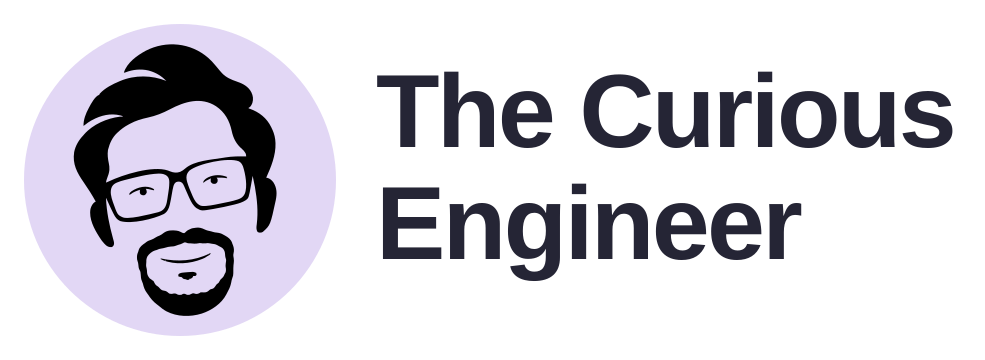
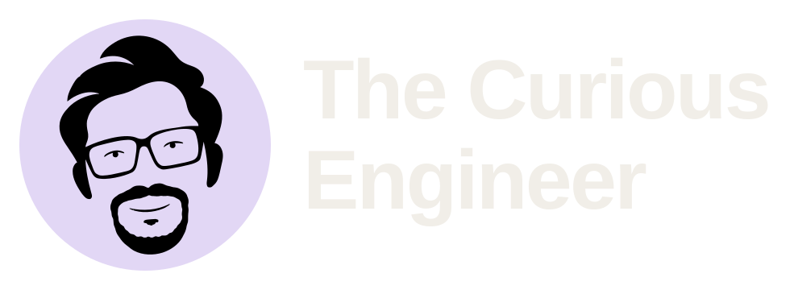

Approved portrait · Brand suite v2.0 · 11 November 2026
The Curious Engineer
The refined portrait now runs through the entire pack: rounded goatee, thinner glasses, subtle eyes and a quieter smile. The face stays black on lilac in both themes. The favicon is eyeless, on white.
Primary identity

Primary · on-light · SVG / PNG / PDF

Primary · on-dark · SVG / PNG / PDF
Website header
320 CSS px wide · eyes retained
320 CSS px wide · eyes retained
Compact layout and wordmark
One drawing, two levels of detail
Main portrait · subtle eyes
Micro portrait · eyes omitted
Browser favicon
Black portrait, solid white circle and transparent corners. These samples are shown at their labelled CSS sizes. Use 100% browser zoom to judge them.
The browser icon uses slightly heavier strokes at tiny sizes. Apple touch and maskable files are separate opaque-white home-screen assets. The face is never inverted.
Social profiles
1024 × 1024 PNGs and SVG originals. Square avatars suit uploaders that apply their own circular crop.
Website mastheads
Link previews
1200 × 630 PNGs. The social/ folder also includes 1500 × 500 covers.
Palette
The portrait ink is black (#000000). The favicon backing is white (#FFFFFF). The existing website font roles remain Arial/Helvetica and Georgia.
Use the right format
| Format | Use |
|---|
| SVG | Scalable web and editing assets. Production lettering is outlined. |
| PNG | Social uploads, slides and raster-only tools. |
| PDF | Vector logo placement in layout and print applications. |
| ICO | Browser fallback containing 16, 32 and 48 px frames. |
This pack replaces v1.0. The earlier pointed-beard and inverted-face assets are retired. The website and repository have not been modified.